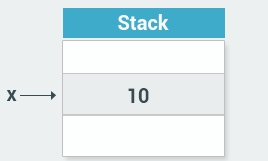
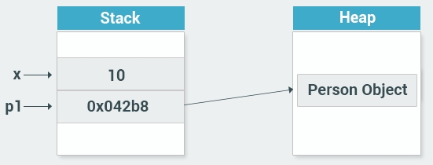
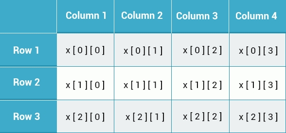

The .NET Framework
-->The .NET Framework consists of the .NET Framework class library, The CLR is the foundation of the .NET Framework. It manages code at execution time, providing core services such as memory management, code accuracy, and many other aspects of your code. The class library is a collection of classes, interfaces, and value types that enable you to accomplish a range of common programming tasks, such as data collection, file access, and working with text.
------------------------------------------------------------
Variables
There are a number of built-in data types in C#. The most common are:
int - integer
float - floating point number
double - double-precision version of float
char - a single character
bool - Boolean that can have only one of two values: True or False
string - a sequence of characters
-->Note that char values are assigned using single quotes and string values require double quotes
---------------------------------------------------------
Console application uses a text-only interface. We chose this type of application to focus on learning the fundamentals of C#.
remember that every C# console application must contain a method (a function) named Main. Main is the starting point of every application, i.e. the point where our program starts execution from.
---------------------------------------------------------
The Console.ReadLine() method returns a string value. if you are expecting another type of value (such as int or double), the entered data must be converted to that type, This can be done using the Convert.ToXXX, where XXX is the .NET name of the type that we want to convert to. For example, methods include Convert.ToDouble and Convert.ToBoolean For integer conversion, there are three alternatives available based on the bit size of the integer: Convert.ToInt16, Convert.ToInt32 and Convert.ToInt64. The default int type in C# is 32-bit
---------------------------------------------------------
The var Keyword
ex:
var num = 15;
-->The code above makes the compiler determine the type of the variable. Since the value assigned to the variable is an integer, the variable will be declared as an integer automatically.
ex:
var num;
num = 42;
-->cause error
-->Overuse of var can harm the readability of your code. Best practice is to explicitly declare variables.
---------------------------------------------------------
Constants
ex
const double PI = 3.14;
PI = 8; //error
-->Constants must be initialized with a value when declared
---------------------------------------------------------
Division
The division operator (/) divides the first operand by the second. If the operands are both integers, any remainder is dropped in order to return an integer value.
-->Division by 0 is undefined and will crash your program
---------------------------------------------------------
Prefix & Postfix Forms
++x; //prefix
x++; //postfix
prefix increments the value, and then proceeds with the expression
postfix evaluates the expression and then performs the incrementing
ex:
int x = 3;
int y = ++x;
// x is 4, y is 4
ex:
int x = 3;
int y = x++;
// x is 4, y is 3
----------------------------------------------------------
The break Statement
What would occur if we forget to include a break statement at the end of case code?
-->compile error
----------------------------------------------------------
-->for (; ;) {} is an infinite loop.
-->If you are using nested loops (i.e., one loop inside another loop), the break statement will stop the execution of the innermost loop and start executing the next line of code after the block.
ex:
for(int i=0; i<10; i++){
if(i==5)
continue;
Console.WriteLine(i);
}
-->number 5 is not printed, as the continue statement skips the remaining statements of that iteration of the loop.
----------------------------------------------------------
Which of the following is used to take user input?
-->Console.ReadLine
-----------------------------------------------------------
-->void is a basic data type that defines a valueless state.
-->The static keyword used to make methods accessible in Main.
-----------------------------------------------------------
-->Parameters behave within the method similarly to other local variables. They are created upon entering the method and are destroyed upon exiting the method.
Named Arguments
ex:
static int Area(int h, int w){
return h*w;
}
static void Main(string[] args){
int res = Area(w: 5, h: 8);
Console.WriteLine(res);
}
-----------------------------------------------------------
Passing Arguments
-->There are three ways to pass arguments to a method when the method is called: By value, By reference, and as Output
-->By value copies the argument's value into the method's formal parameter. Here, we can make changes to the parameter within the method without having any effect on the argument.
-->By default, C# uses call by value to pass arguments
example by value:
static void Sqr(int x){
x = x*x;
}
static void Main(){
int a = 3;
Sqr(a);
Console.WriteLine(a); //Output 3
}
-->As you can see, the sqr method does not change the original value of the variable, as it's passed by value, meaning that it operates on the value, not the actual variable.
-----------------------------------------------------------
Passing by Reference
ex:
static void Sqr(ref int x){
x = x*x;
}
static void Main(){
int a = 3;
Sqr(ref a);
Console.WriteLine(a); // Outputs 9
}
-->The ref keyword passes the memory address to the method parameter, which allows the method to operate on the actual variable.
-----------------------------------------------------------
Passing by Output
ex:
static void GetValues(out int x, out int y){
x = 5;
y = 42;
}
static void Main(string[] args){
int a, b;
GetValues(out a, out b);
//Now a equals 5, b equals 42
}
-->Similar to the ref keyword, the out keyword is used both when defining the method and when calling it.
-----------------------------------------------------------
Method Overloading
-->Method overloading is when multiple methods have the same name, but different parameters
static void Print(int a){
Console.WriteLine("Value: "+a);
}
static void Print(double a){
Console.WriteLine("Value: "+a);
}
-->Now, the same print method name will work for both integers and doubles.
ex:
static void Print(int a){
Console.WriteLine("Value: "+a);
}
static void Print(double a){
Console.WriteLine("Value: "+a);
}
static void Print(string label, double a){
Console.WriteLine
}
-->When overloading methods, the definitions of the methods must differ from each other by the types and/or number of parameters
-->You cannot overload method declarations that differ only by return type
The following declaration results in an error:
int PrintName(int a){}
float PrintName(int b){}
double PrintName(int c){}
ex:
What is the output of this code?
static void Print(int a) {
Console.WriteLine(a*a);
}
static void Print(double a) {
Console.WriteLine(a+a);
}
static void Main(string[] args) { Print(3); }
----------------------------------------------------------
Classes
-->a class is a data type that defines a set of variables and methods for a declared object, a class is like blueprint. it defines the data and behavior for a type
objects
-->the term type is used to refer to a class name, we're creating an object of a particular type, an object is called an instance of a class
properties-->determines the current state of an object
----------------------------------------------------------
Value Types
-->the built-in data types, such as int and double, are used to declare variables that are value types
ex:
int x =10;

Reference Types
-->Reference types are used for storing objects, Reference types are stored in a part of the memory called the heap when you instantiate an object, the data for that object is stored on the heap, while its heap memory address is stored on the stack

-->Stack is used for static memory allocation, which includes all your value types, like x
-->Heap is used for dynamic memory allocation, which includes custom objects, that might need additional memory during the runtime of your program
----------------------------------------------------------
ex:
class Person{
int age;
string name;
public void SayHi(){
Console.WriteLine("Hi");
}
}
-->You can include an access modifier for fields and methods(also called members) of a class. Access modifiers are keywords used to specify the accessibility of a member.
-->A member that has been defined public can be accessed from outside the class, as long as it's anywhere within the scope of the class object. That is why our SayHi method is declared public, as we are going to call it from outside of the class
-->You can also designate class members as private or protected, if no access modifier is defined, the member is private by default.
ex:
class Person{
int age;
string name;
public void SayHi(){
Console.WriteLine("Hi");
}
}
static void Main(string[] args){
Person p1 = new Person();
p1.SayHi();
}
-----------------------------------------------------------
Encapsulation
-->Encapsulation is also called information hiding.
-->Part of the meaning of the word encapsulation is the idea of "surrounding" an entity, not just to keep what's inside together, but also to protect it, in programming, encapsulation means more than simply combining members together within a class, it also means restricting access to the inner workings of that class
-->Encapsulation is implemented by using access modifiers. an access modifier defines the scope and visibility of a class member
access modifiers: public, private, protected, internal, protected internal
ex:
class BankAccount{
private double balance=0;
public void Deposit(double n){
balance +=n;
}
public void Withdraw(double n){
balance -=n
}
public double GetBalance(){
return balance;
}
}
-->We used encapsulation to hide the balance member from the outside code, the class data can be read through the GetBalance method, this helps maintain data integrity
In summary, the benefits of encapsulation are:
1-Control the way data is accessed or modified
2-Code is more flexible and easy to change with new requirements
3-Change one part of code without affecting other parts of code
-----------------------------------------------------------
Constructors
-->A class constructor is a special member method of a class that is executed whenever a new object of that class is created
-->A constructor has exactly the same name as its class, is public, and doesn't have any return type
ex:
class Person{
private int age;
public Person(){
Console.WriteLine("Hi there");
}
}
-->This can be useful in a number of situations. For example, when creating an object of type BankAccount, you could send an email notification to the owner, The same functionality could be achieved using a separate public method. The advantage of the constructor is that it is called automatically.
-->Constuctors can be very useful for setting initial values for certain member variables, a default constructor has no parameters. however, when needed, parameters can be added to a constructor. This makes it possible to assign an initial value to an object when it's created
ex:
class Person{
private int age;
private string name;
public Person(string m){
name = nm;
}
public string getName(){
return name;
}
}
static void Main(string[] args){
Person p = new Person("David");
Console.WriteLine(p.getName());
}
-->Consturctor can be overloaded like any method by using different numbers of parameters.
-----------------------------------------------------------
Properties
-->it's a good practice to encapsulate members of a class and provide access to them only through public methods.
-->property is a member that provides a flexible mechanism to read, write, or compute the value of a private field. Properties can be used as if they are public data members, but actually include special methods called accessors
-->The accessor of a property contains the executable statements that help in getting(reading or computing) or setting (writing) a corresponding field. Accessor declarations can include a get accessor, a set accessor, or both.
ex:
class Person{
private string name; //field
public string Name{ //property
get {return name;}
set {name = value;}
}
}
-->value is a special keyword, which represents the value we assign to a property using the set accessor, the name of the property can be anything you want, but coding conventions dictate properties have the same name as the private field with a capital letter.
-->any accessor of a property can be omitted ex:
class Person{
private string name;
public string Name{
get {return name;}
}
}
-->A property can also be private, so it can be called only from within the class
-->You can have any custom logic with get and set accessors
Auto-Implemented Properties
-->When you don't need any custom logic, C# provides a fast and effective mechanism for declaring private members through their properties.
ex:
public string Name {get; set;}
-----------------------------------------------------------
Arrays
-->array is a reference type because it's an object
-->C# provides numerous built-in classes to store and manipulate data, one example of such a class is the Array class
int[] myArray;-->this statement declares an array of integers
-->since arrays ara objects, we need to instantiate them with the new keyword:
int[] myArray = new int[5];-->This instantiates an array named myArray that holds 5 integers.
-->we can provide initial values to the array when it is declared by using curly brackets:
ex:
int[] prices = new int[4] {3,5,6,7};
-->we can omit the size declaration when the number of elements are provided in the curly braces:
ex:
int[] prices = new int[] {3,5,6,7};
-->we can even omit the new operator
ex:
int[] prices = {3,5,6,7};
-----------------------------------------------------------
The foreach Loop
ex:
foreach(int k in a){
Console.WriteLine(k);
}
-->The foreach loop iterates through the array a and assigns the value of the current element to the variable k at each iteration of the loop. So, at the first iteration, k=a[0], at the second k=a[1]
-->the data type of the variable in the foreach loop should match the type of the array elements, often the keyword var is used as the type of the variable, as in: foreach(var k in a) the compiler determines the appropriate type for var
-----------------------------------------------------------
Multidimensional Arrays
int[ , ] x = new int[3,4];

ex:
int[ , ] someNums = {{2,3},{5,6},{4,6}};
-->Arrays can have any number of dimensions, but keep in mind that arrays with more than three dimensions are harder to manage.
-----------------------------------------------------------
Jagged Arrays
-->is an array whose elements are arrays. so it's basically an array of arrays.
ex:
int[][] jaggedArr = new int[3][];
-->Each dimension is an array, so you can also initialize the array upon declaration like this:
int[][] jaggedArr = new int[][] {
new int[] {1,8,2,7,9},
new int[] {2,4,6},
new int[] {33,42}
};
jagged array-->is an array of arrays, so an int[][] is an array of int[ , ] each of which can be of different lengths and occupy their own block in memory
multidimensional array-->int[,] is a single block of memory (essentially a matrix). it always has the same amount of columns for every row
ex:
int[ ][ , ] a = new int[8][ , ];
-->jagged array that contains 8 two dimensional arrays
-----------------------------------------------------------
Arrays Properties
arr.Length-->to know the number of elements
arr.Rank-->to know the number of dimensions
Array Methods
arr.Max()-->returns the largest value.
arr.Min()-->returns the smallest value.
arr.Sum()-->returns the sum of all elements.
-----------------------------------------------------------
Strings
-->it's common to think of strings as arrays of characters. in reality, strings in C# are objects
-->When you declare a string variable, you basically instantiate an object of type String
-->String objects support a number of useful properties and methods:
Length-->returns the length of the string
IndexOf(value)-->returns the index of the first occurrence of the value within the string.
Insert(index,value)-->inserts the value into the string starting from the specified index
Remove(index)-->removes all characters in the string from the specified index
Replace(oldValue, newValue)-->replaces the specified value in the string
Substring(index,length) returns a substring of the specified length, starting from the specified index. if length is not specified, the operation continues to the end of the string
Contains(value)-->returns true if the string contains the specified value
ex:
string s = "Hello";
char x;
x = s[s.Length-1];
-->to assign last character of the string to the x variable.
-----------------------------------------------------------